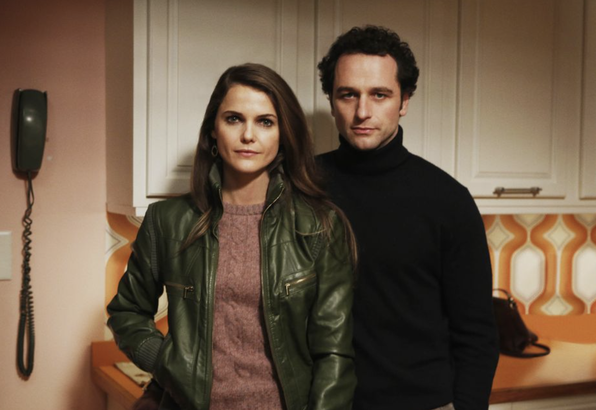

Quality television series about spies
The Americans (2013-2018) is a good example of a quality TV series. The series showrunner is Joe Weisberg.

Fig.1. Philip (played by Matthew Rhys) and Elizabeth Jennings (Keri Russell [see her also in The Diplomat (2023)]) The Americans).
a good review of the tv series by James Poniewozik, NYT